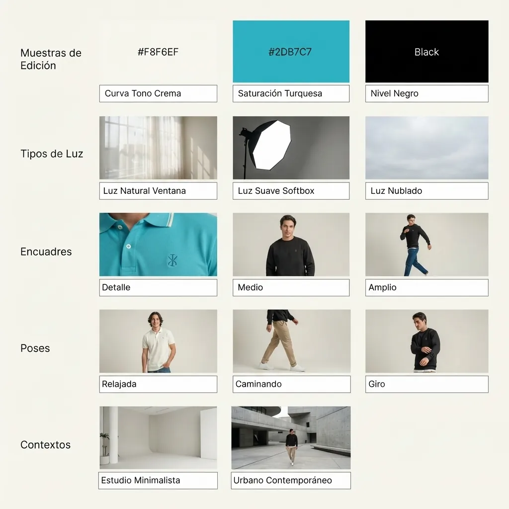
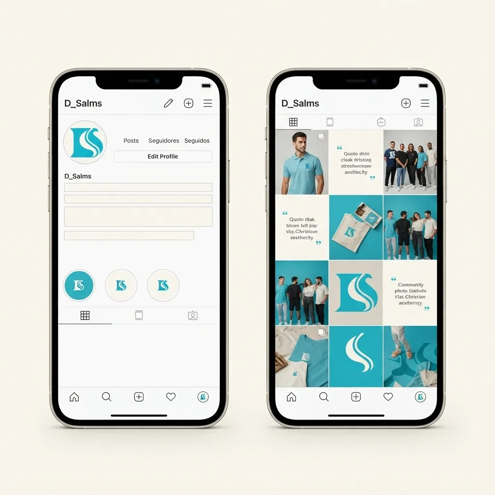

12 · ¿Cómo podemos mejorar?
¿Cómo puede D'Salms fortalecer su identidad?
Plan de fortalecimiento de marca: problema → oportunidad → propuesta → beneficio.
Leer más: pendientes del documento
- Fotografías reales de producto: por insertar
- Mockups y diagramas indicados: por elaborar
- Precios, promociones y datos comerciales: por definir
Mejora fotográfica

Antes y después (conceptual)

Comparador conceptual de presentación fotográfica: no muestra una campaña existente.
Línea de tiempo de prioridades
- EstandarizaciónAplicar la guía de identidad en todas las piezas
- FotografíasFotografía real de producto con guía común
- CatálogoFichas ordenadas con plantilla de descripción
- ComunicaciónCalendario y tono de voz en todos los canales
- RedesAbrir y configurar perfiles con la identidad aprobada
- Evaluación continuaRevisión trimestral con indicadores
Propuesta
Mejoras de catálogo y redes


OPORTUNIDADES / ARCHIVO 2026
Lo siguiente también puede inspirar.
Fotografías, diseño y aplicaciones originales del universo visual de D’Salms.